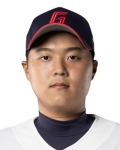
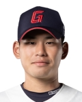

|  | 이름/생년월일 | 등번호/포지션 | 경기 수 | 타수 | 타율 | 안타 | 2루타 | 3루타 | 홈런 | 타점 | 득점 | 도루 | 볼넷 | 삼진 | 병살 | 출루율 | 장타율 | OPS | wRC+ | WAR |
|---|---|---|---|---|---|---|---|---|---|---|---|---|---|---|---|---|---|---|---|---|
| 한동희 / 1999.06.01 | 25 / 3루수 | 108 | 319 | 0.223 | 71 | 11 | 0 | 5 | 32 | 30 | 1 | 26 | 58 | 16 | 0.279 | 0.304 | 0.583 | 62.1 | -0.37 | |
| 비판점 | 한동희는 지난 22년 4월 월간 MVP와 함께 유망주 딱지를 완전히 떼어버리는 듯 했다. 시즌 중반 햄스트링 부상 이후 시즌 끝까지 그 페이스를 이어가진 못했지만 많은 팬들은 22시즌을 끝으로 은퇴하는 이대호의 뒤를 이어 한동희가 팀의 4번타자 역할을 해줄 것이라고 기대했다. 팀 차원에서도 이대호의 은퇴로 인해 하락할 수 밖에 없는 팀의 장타력 보강을 위해 비시즌 기간동안 타격코치의 주도 하에 타구 발사각 올리기 프로젝트를 진행했고 한동희는 스윙 메커니즘을 수정했다. 시범경기에서 홈런을 쏘아올리며 프로젝트가 순조롭게 진행되는 것 같았으나, 시즌이 시작되고 잠실야구장에서 펼쳐진 두산과의 개막전 7타수 무안타 침묵(본인은 이 경기를 직관했다. 팀은 11회 말 로하스의 끝내기 홈런으로 패배.)을 시작으로 4월 한달 내 타격이 힘을 쓰지 못하자 본인의 원래 타격폼으로 돌아왔지만 어긋난 메커니즘은 결국 시즌 끝날 때까지 맞춰지지 않았다. 다음 시즌은 프로 7년차가 되기 때문에 더 이상 어린 선수가 아니다. 또한 데뷔 이후부터 쭉 3루 수비에 대한 평가(송구, 포구, 수비범위)는 좋지 않았는데 올 시즌은 타격이 본인 생각대로 되지 않아서인지 수비에서도 실책을 무더기로 저지르는 등 공수 양면에서 팀에 마이너스가 되었다. 올해 11월 상무에서 전역한 나승엽이 3루수 불가판정을 받은 것이 아니라면 다음 시즌부터는 팀의 내야 수비력 상승과 본인이 느끼는 수비 부담 때문에 타격 사이클에 영향을 주는 것을 덜어주기 위해서라도 1루수 한동희의 모습을 봤으면 한다. 항저우 아시안 게임 출전 불발로 인한 병역 관련 문제도 개인적 생각으로는 빠르게 상무에 지원하는 것이 좋을 것 같다는 생각이다. 물론 이 부분은 구단과 협의를 통해서 충분히 좋은 판단을 내릴 것이라고 생각한다. 만약 24시즌에도 함께 한다면 본인의 피나는 노력은 당연한 것이고 팬으로서는 멘탈적인 부분 잘 챙겼으면 좋겠다. 특히 본인이 안풀릴 때 경기를 보고 있으면 생각이 많은 것이 티가 난다. 이러나 저러나 우리에겐 '포스트 이대호'인 선수이고 팀의 4번타자를 맡아줘야 할 선수이기 때문이다. 다음 시즌부터는 22시즌 4월의 퍼포먼스를 쭉 유지했으면 좋겠다. | |||||||||||||||||||
|  | 이름/생년월일 | 등번호/보직 | 경기 수 | 이닝 수 | ERA | 승 | 패 | 세이브 | 홀드 | 피안타 | 피홈런 | 4사구 | 탈삼진 | 실점 | 자책점 | WHIP | WAR |
|---|---|---|---|---|---|---|---|---|---|---|---|---|---|---|---|---|---|
| 김진욱 / 2002.07.05 | 15 / 중간계투 | 50 | 36 1/3 | 6.44 | 2 | 1 | 0 | 8 | 37 | 4 | 29 | 35 | 27 | 26 | 1.82 | -0.32 | |
| 비판점 | 한동희는 지난 22년 4월 월간 MVP와 함께 유망주 딱지를 완전히 떼어버리는 듯 했다. 시즌 중반 햄스트링 부상 이후 시즌 끝까지 그 페이스를 이어가진 못했지만 많은 팬들은 22시즌을 끝으로 은퇴하는 이대호의 뒤를 이어 한동희가 팀의 4번타자 역할을 해줄 것이라고 기대했다. 팀 차원에서도 이대호의 은퇴로 인해 하락할 수 밖에 없는 팀의 장타력 보강을 위해 비시즌 기간동안 타격코치의 주도 하에 타구 발사각 올리기 프로젝트를 진행했고 한동희는 스윙 메커니즘을 수정했다. 시범경기에서 홈런을 쏘아올리며 프로젝트가 순조롭게 진행되는 것 같았으나, 시즌이 시작되고 잠실야구장에서 펼쳐진 두산과의 개막전 7타수 무안타 침묵(본인은 이 경기를 직관했다. 팀은 11회 말 로하스의 끝내기 홈런으로 패배.)을 시작으로 4월 한달 내 타격이 힘을 쓰지 못하자 본인의 원래 타격폼으로 돌아왔지만 어긋난 메커니즘은 결국 시즌 끝날 때까지 맞춰지지 않았다. 다음 시즌은 프로 7년차가 되기 때문에 더 이상 어린 선수가 아니다. 또한 데뷔 이후부터 쭉 3루 수비에 대한 평가(송구, 포구, 수비범위)는 좋지 않았는데 올 시즌은 타격이 본인 생각대로 되지 않아서인지 수비에서도 실책을 무더기로 저지르는 등 공수 양면에서 팀에 마이너스가 되었다. 올해 11월 상무에서 전역한 나승엽이 3루수 불가판정을 받은 것이 아니라면 다음 시즌부터는 팀의 내야 수비력 상승과 본인이 느끼는 수비 부담 때문에 타격 사이클에 영향을 주는 것을 덜어주기 위해서라도 1루수 한동희의 모습을 봤으면 한다. 항저우 아시안 게임 출전 불발로 인한 병역 관련 문제도 개인적 생각으로는 빠르게 상무에 지원하는 것이 좋을 것 같다는 생각이다. 물론 이 부분은 구단과 협의를 통해서 충분히 좋은 판단을 내릴 것이라고 생각한다. 만약 24시즌에도 함께 한다면 본인의 피나는 노력은 당연한 것이고 팬으로서는 멘탈적인 부분 잘 챙겼으면 좋겠다. 특히 본인이 안풀릴 때 경기를 보고 있으면 생각이 많은 것이 티가 난다. 이러나 저러나 우리에겐 '포스트 이대호'인 선수이고 팀의 4번타자를 맡아줘야 할 선수이기 때문이다. 다음 시즌부터는 22시즌 4월의 퍼포먼스를 쭉 유지했으면 좋겠다. | ||||||||||||||||
이 페이지는 다음 시즌 반드시 반등에 성공해야 하는 선수에 대해 비판해보는 페이지입니다.